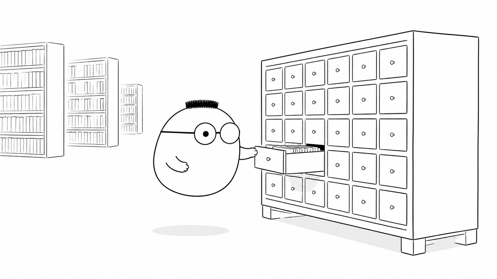
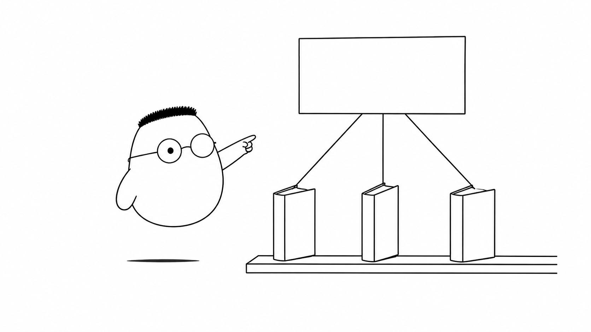

Masalah sehari-hari
Gudang restoran menyimpan sepuluh ribu resep. Seorang tamu meminta resep dengan kata "kopi". Kuka membuka kertas pertama, lalu kertas kedua, dan terus berjalan. Ia harus membaca setiap resep untuk memastikan tidak ada yang terlewat.
Cara itu masih mungkin untuk dua puluh resep. Untuk sepuluh ribu resep, waktunya terlalu panjang. full-text search membantu petugas mencari isi dokumen, bukan hanya mencocokkan satu kolom secara mentah.
Analogi Kuka
Kuka memanggil pustakawan. Pustakawan tidak membaca semua resep setiap kali ada permintaan. Ia menyiapkan kartu katalog sejak awal.
Setiap kartu mewakili satu kata. Kartu "kopi" berisi petunjuk menuju resep nomor 18, 204, dan 7.631. Saat kata itu diminta, pustakawan mengambil kartunya dan langsung melihat daftar resep yang cocok.
Peta istilah kartu katalog
Pustakawan adalah mesin pencari. Kartu katalog adalah index. Kata pada kartu adalah term. Daftar nomor resep adalah posting list. Resep adalah dokumen. Permintaan tamu adalah query. Kartu membantu petugas menemukan dokumen tanpa membaca semuanya.
Ilustrasi

Kartu katalog mengubah pekerjaan pustakawan. Ia bekerja lebih dulu saat resep masuk. Permintaan berikutnya cukup membaca petunjuk yang sudah tersedia.
Penjelasan konsep
Pencarian biasa bergerak dari dokumen ke kata. Petugas membuka resep, lalu memeriksa isinya. Cara yang dibalik disebut inverted index. Ia bergerak dari kata ke dokumen yang memuatnya.
Saat resep disimpan, mesin memecah kalimat menjadi token. Ia membuat huruf menjadi seragam dan mencatat posisi kata. Untuk setiap kata, mesin menyimpan daftar ID resep yang cocok. Kartu kata itu dapat dibaca cepat ketika ada query baru.
inverted index adalah inti trik ini. Kartu "kopi" menunjuk banyak resep yang memiliki kata tersebut. Jumlah semua resep boleh besar. Pencarian cukup bekerja pada daftar yang ditunjuk kartu.

Elasticsearch adalah mesin pencari dokumen JSON yang memakai gagasan ini. Ia menyimpan kartu kata dan membagi pekerjaan ke beberapa shard. Banyak meja petugas dapat mencari bagian berbeda, lalu hasilnya digabungkan.
Hasil tidak hanya berupa daftar acak. Mesin memberi skor pada tiap resep. Resep yang paling cocok diletakkan lebih atas supaya tamu cepat melihat jawaban yang berguna.
BM25: skor relevansi
BM25 menilai kecocokan sebuah resep. Kata yang muncul beberapa kali memberi sinyal, kata yang jarang muncul memberi sinyal lebih kuat, dan resep yang terlalu panjang tidak otomatis menang. Skor lebih tinggi berarti resep dianggap lebih relevan.
Fuzzy search: toleransi typo
fuzzy search membolehkan kesalahan kecil. Saat tamu mengetik "kpi", mesin membandingkan jarak perubahan karakter dan masih dapat menemukan "kopi". Batas jarak perlu dijaga agar hasil tidak melebar ke kata yang tidak berhubungan.
Kapan memakai apa
Rak kecil dengan sedikit resep cukup memakai pencarian sederhana di Postgres. Jika dokumen sudah banyak dan perlu skor, typo tolerance, atau pencarian yang sangat cepat, Elasticsearch lebih cocok. Pilih alat sesuai ukuran data dan kebutuhan tamu.
Diagram alur
Tamu mengirim satu kata. Petugas membuka kartu yang sesuai. Daftar resep lalu diurutkan menurut skor sebelum respons dikirim.
Contoh mini
cari "kopi" -> hasil 1. Kopi susu gula aren | skor 9.2 2. Roti bakar kopi | skor 7.4 3. Puding kopi | skor 5.8
Kartu kata "kopi" tidak menyimpan seluruh resep. Kartu itu hanya menunjuk resep yang cocok. Skor membantu resep paling sesuai muncul lebih dulu.
Ringkasan
- Membuka sepuluh ribu resep satu per satu membuat pencarian lambat.
- Kartu katalog menyimpan petunjuk dari sebuah kata menuju dokumen.
inverted indexmembalik arah pencarian dari kata ke dokumen.Elasticsearchmemakai kartu kata, shard, dan skor untuk pencarian cepat.BM25mengurutkan hasil berdasarkan relevansi.fuzzy searchmembantu saat tamu membuat typo kecil.- Postgres cukup untuk rak kecil, sedangkan Elasticsearch cocok untuk kebutuhan pencarian yang lebih besar.
Pertanyaan pemahaman
- Kenapa mencari di tumpukan besar dengan membuka satu per satu itu lambat?
- Apa isi kartu katalog terbalik (inverted index)?
- Kenapa ketikan yang salah sedikit tetap bisa menemukan resep?
Mau lebih dalam
Versi teknis membahas cara membuat index, mengirim query, dan menghubungkan mesin pencari dengan backend.